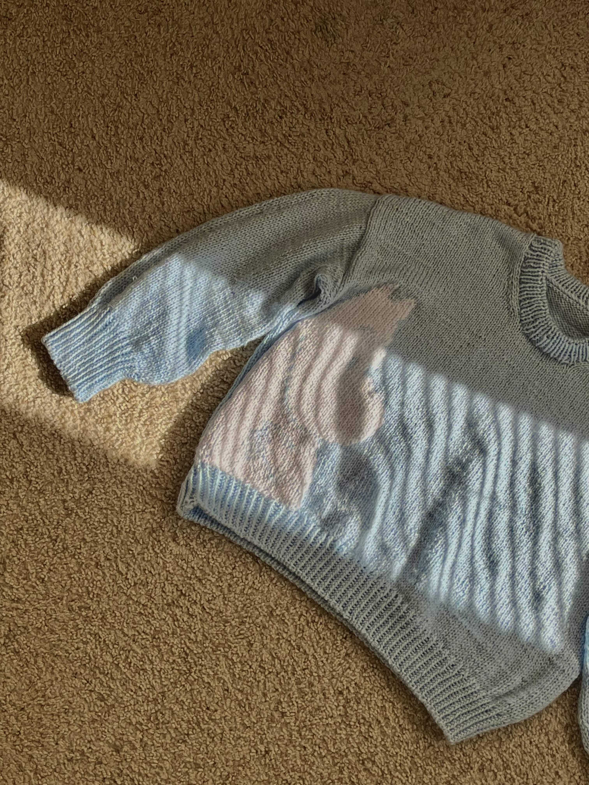
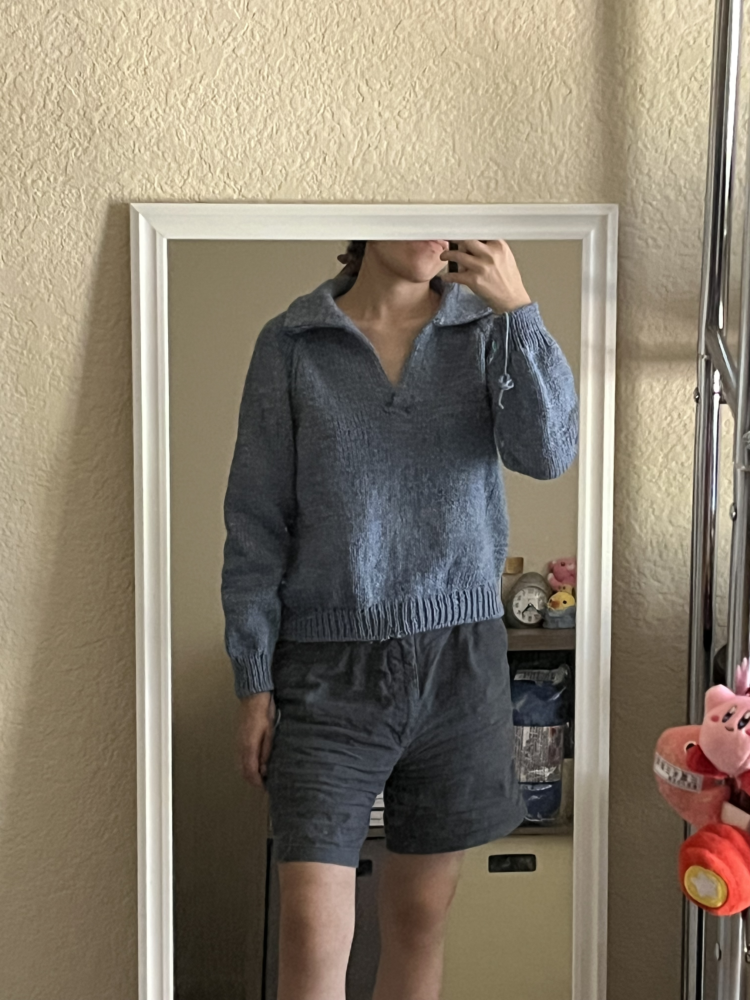
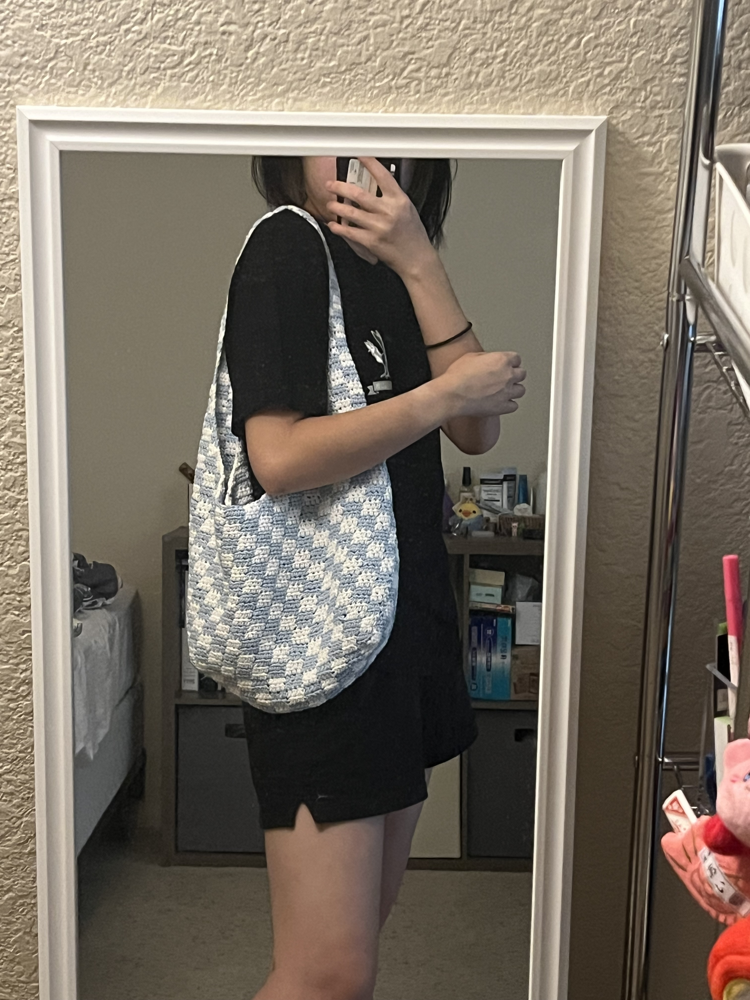

Beyond the research
Knitting, books, football, and other things that keep me sane between regressions.
Avid knitter (part-time crocheter) since college! Mostly sweaters and accessories.



I read mostly Chinese non-fiction books!
→ View my Goodreads shelf